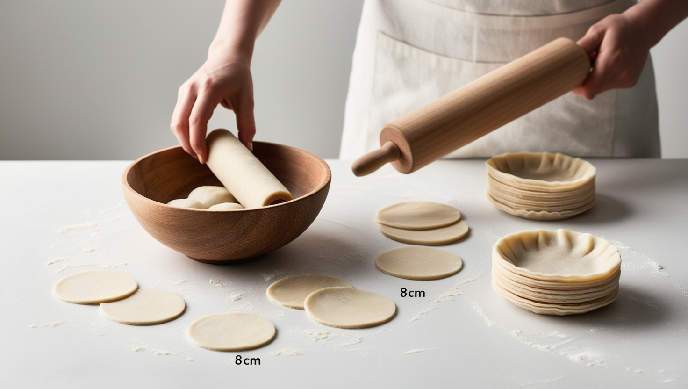

Step 1
Prepare the dough by mixing the flour with the salt and gradually adding the hot water. Knead for 10 minutes until smooth. Let it rest covered for 30 minutes. Then, divide into small balls and roll them out into thin circles about 8 cm in diameter. If you prefer, you can use ready-made dumpling wrappers.
